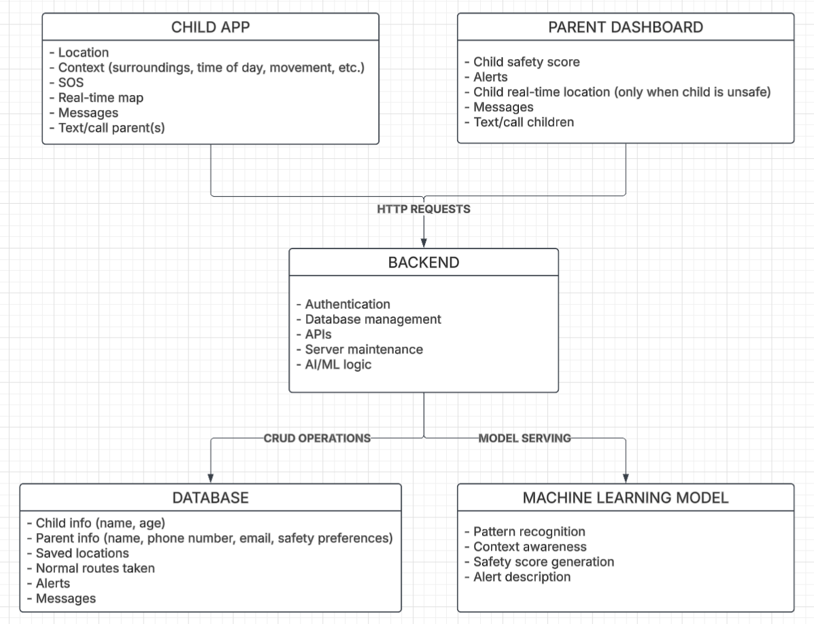
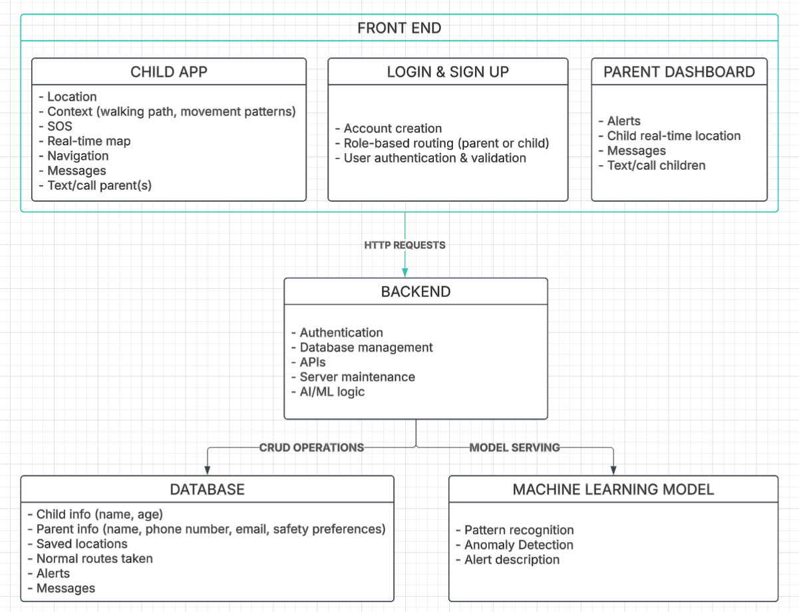
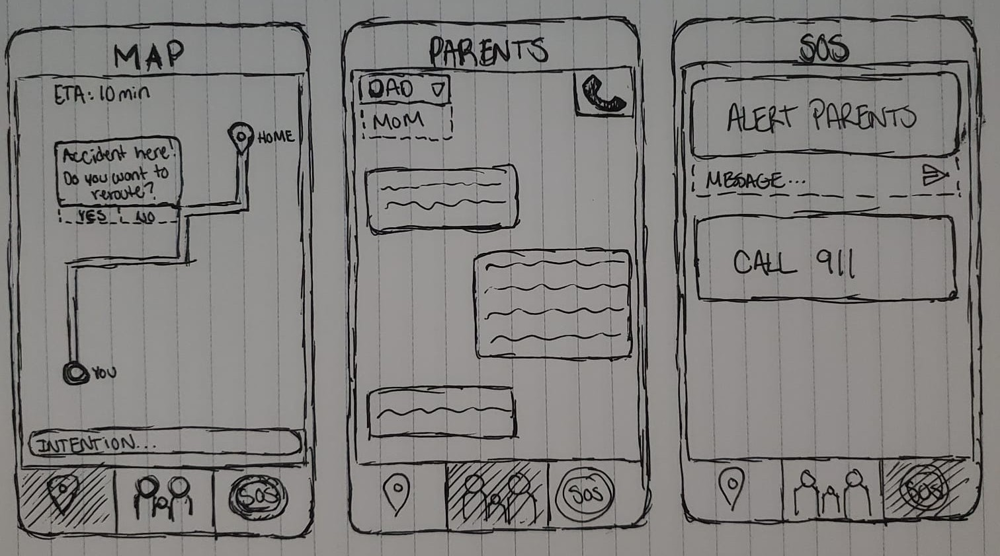
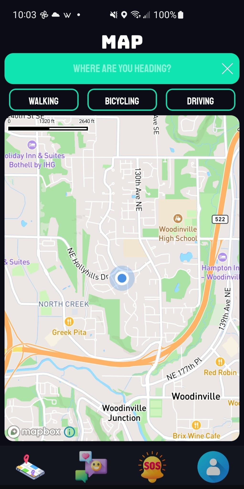
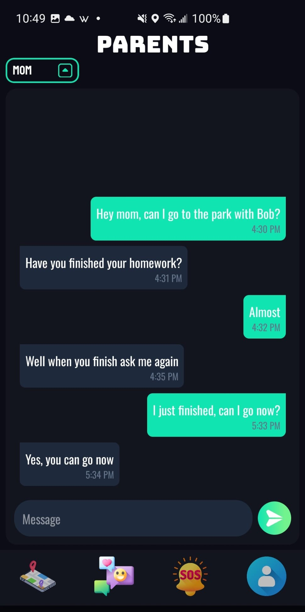
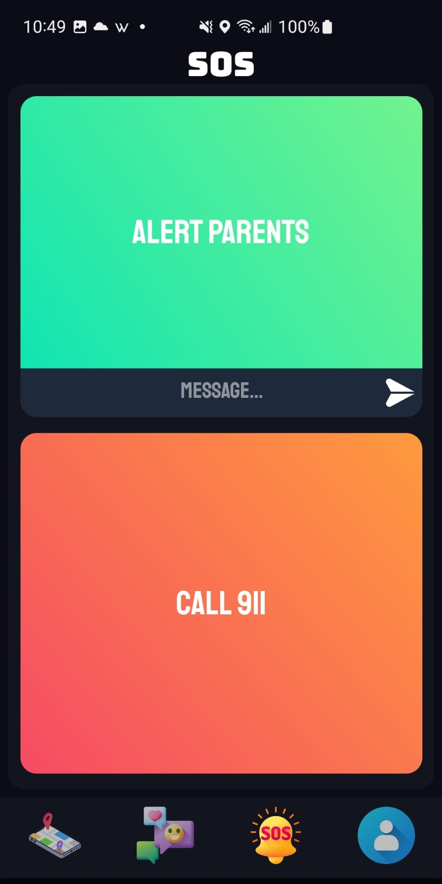
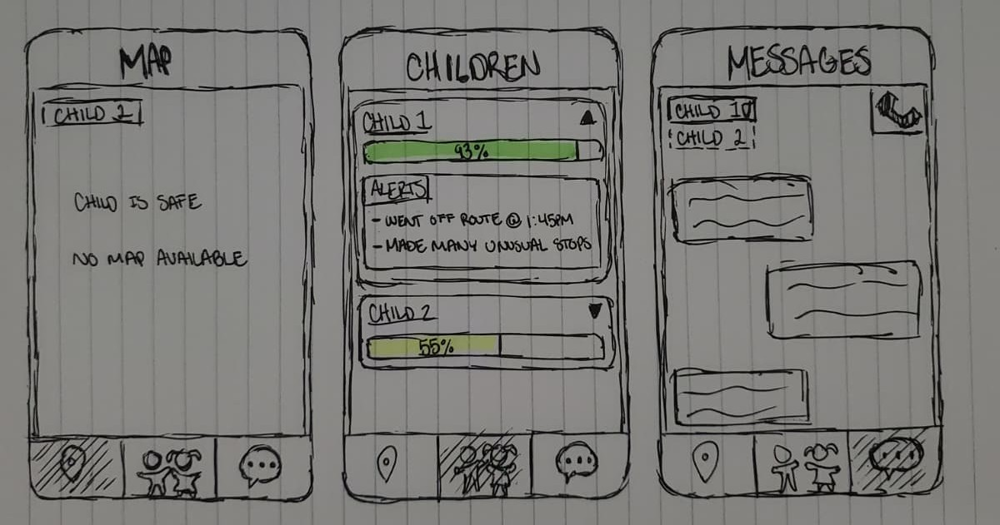
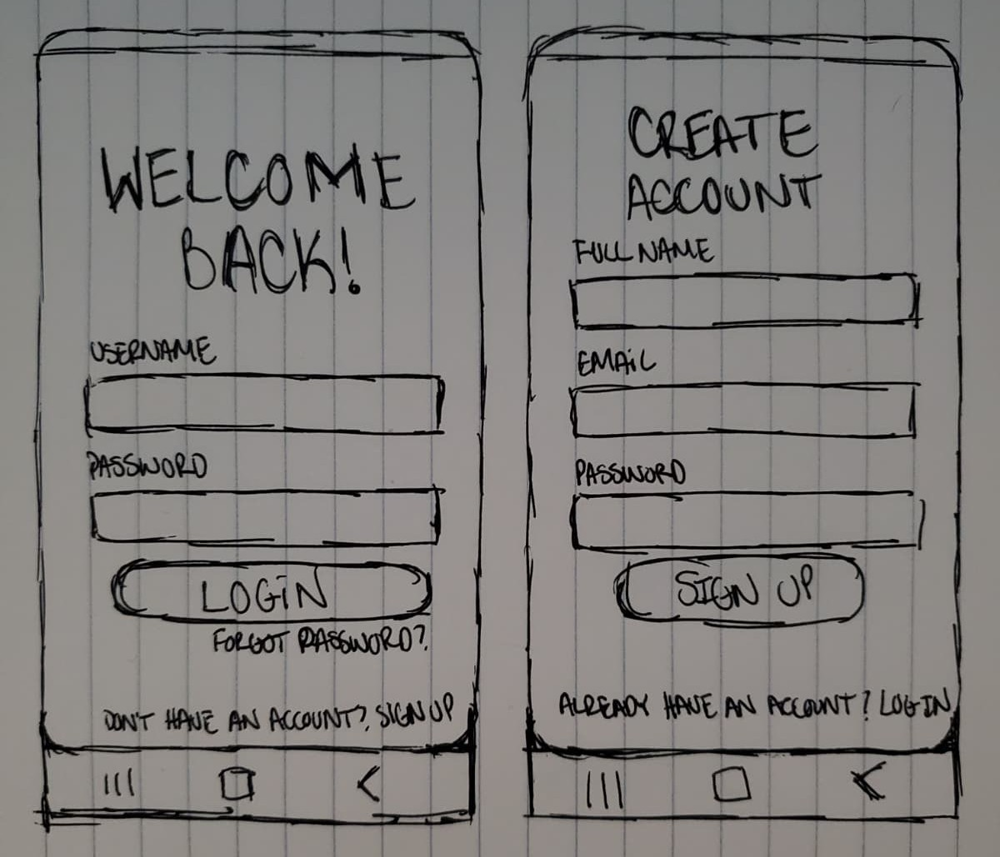
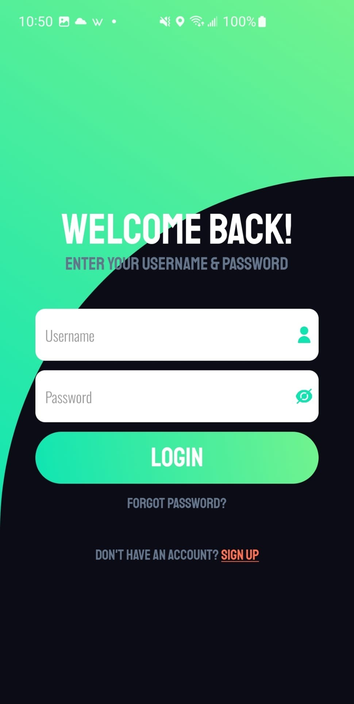
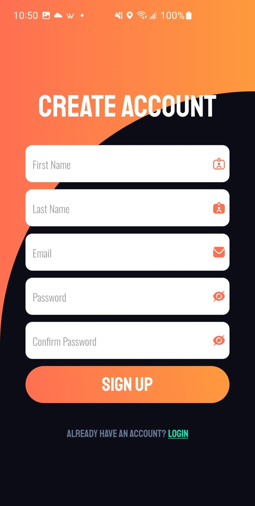

Architectural Diagram
Initial Architectural Diagram
The initial diagram was created with the idea that safety indicators such as surroundings, time of day, and movement, would be used to train a model to generate safety scores. This is shown with a front end consisting of the child app used to collect the safety indicator data and the parent app used to display the safety score, alerts, and child real time location. The back end queries the database to store the data from the child and uses this to train the machine learning model.

Current Architectural Diagram
After careful consideration and talking with my expert, I decided it would be best to switch from generating a safety score to using anomaly detection to identify unusual behavior. The current architectural diagram was made with this in mind, with the addition of user authentication. This can be seen with the addition of login and signup in the front end with slight changes to the child app, parent dashboard, and the machine learning model.

Development of Child Interface
Early Design Concept
In the early stages of designing the child interface I considered three components: a map, chat box, and SOS feature. I designed this by creating a sketch of each of these components as tabs. The map tab would have a route to the destination, with rerouting capabilities and a text box to specify intent; the parents tab would be a simple messaging interface to text parents; and the SOS tab would consist of two buttons - one to alert parents with the option of a custom message and the other to call 911.

Current Child Interface
Once I began implementing the front end, and after switching from a safety score to anomaly detection, I decided not to change much from my original interface sketch. Although, I did add some things like being able to search for a destination, the option to choose a travel mode, and a profile tab which hasn't been implemented yet. I also decided to go with Mapbox for the map since it has more customizability and is cheaper than Google Maps.



Development of Parent Interface
Early Design Concept
When designing the parent interface, I had the idea that a safety score would be received and the child's real-time location would only be available when they were unsafe or in danger. With this in mind, I sketched out three tabs: a map, children, and messages tab. Within the map tab, the parent is able to select any of their children to display their location on a map - when unsafe or in danger. In the children tab, the parent has a list of all their children with their corresponding safety score and alert history. The last tab is the messages tab which is essentially the chat box in the child interface but for parents.

Current Parent Interface
At the moment I have not been able to implement the frontend for the parent, but there are some changes that will be made to the parent interface. For one, a map with all children's locations will always be available - not only when the child is unsafe or in danger. In addition, there will no longer be safety scores, as already mentioned, so that will be removed from the children tab. A profile tab will also be added just like in the children interface, for account details.
Login and Sign Up Page Design
Initial Authentication Form Design
The idea of the authentication forms was for them to be clear, consistent, and user-friendly. In terms of the login, it would contain the traditional fields of username and password, an option for a forgotten password, and the ability to navigate to the sign-up page. On the other hand, the sign-up page would have three fields: full name, email, and password; with the addition of an option to navigate to the login page. These forms are simple to not overwhelm the user, while being complete for user authentication.

Current Authentication Form Interface
During implementation, the authentication forms were left as they were sketched with some format and styling changes. The login form's content was just as in the sketch, while the sign-up form separated the full name field into first name and last name fields, and a confirm password field was added. Other than content, the color of the forms are different colors to create a clear distinction between the two and to match the color theme of the app.

